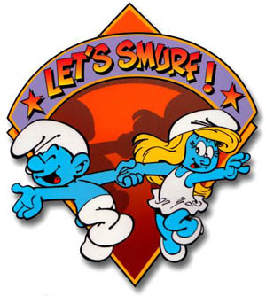

Por que os Smurfs não morreram nem eram frutos dos chás de cogumelo.

Os Smurfs (em Portugal, estrunfes), ou Les Schtroumpfs em francês, são personagens criados pelo ilustrador belga Peyo. Apareceram pela primeira vez em 1958, na tira Johan et Pirlouit, publicada na revista em quadrinhos belga Spirou. No Brasil, são conhecidos principalmente graças a um desenho animado produzido pela Hanna-Barbera Productions e veículado pela Rede Globo de Televisão na década de 1980.
São pequenas criaturas azuis, semelhantes a duendes, que vivem em casinhas em forma de cogumelo, em uma vila escondida no meio da floresta.
São governados pelo sábio "Papai Smurf", que tem um gorrinho vermelho, ao invés do popular gorrinho branco dos demais smurfs.
A única personagem feminina é a loira Smurfete (Estrunfina). Outros personagens marcantes são o Eugênio, um sabe-tudo e puxa-saco do Papai Smurf e o Ranzinza, mal-humorado e pessimista.
Nas imediações da vila dos smurfs, vive o feudal Gargamel (Gasganete) e seu gato Cruel (Azazel). O feiticeiro persegue os Smurfs, pois precisa deles como ingrediente em uma fórmula para obter ouro.
Retirado de "http://pt.wikipedia.org/wiki/Os_Smurfs"